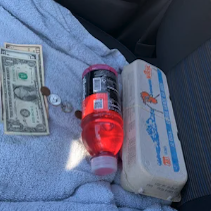

Paul Cellini
paul@cellini.org

~ ~ ~
Paul Cellini is a 22-year-old editor and filmmaker based in Brooklyn, NY.
~ ~ ~
Portfolio last updated on 02/16/2026
Neighbors
Assistant Editor ● 6 Episodes ● Directed by Harrison Fishman & Dylan Redford ● HBO, A24, Central, Gummy Films ● 2026
~ ~ ~
Superlative Day
Additional Editor ● Short ● Directed by Harleigh Shaw ● Produced by Adina Alterman, Janet Manina, and Julia Barlow
● Gummy Films ● 2026
~ ~ ~
Majent - Interface (visualizer)
5m 4s ● 2026
~ ~ ~
$CHEAP$$ AC for Sale
3m 44s ● 2025
~ ~ ~
John Maus - Disappears
Assistant Editor ● 3m 17s ● Directed by Blake James Reid ● Produced by Janet Manina ● Gummy Films ● 2025
~ ~ ~
Untitled La jetée Movie
37s ● 2025
~ ~ ~

GINO! Forever
Editor ● 14m33s ● Directed by Sam Levy ● Produced by Adina Alterman ● 2025
~ ~ ~
Dinner Party
Editor ● 17m 32s ● Directed by Norah Gross ● Produced by Adina Alterman ● 2025
~ ~ ~

Being Able to be Somewhere that Doesn't Exist
Co-direction & edit with Lily Gudas ● 6m 26s ● 2025
~ ~ ~
Leslie - Ballroom
Co-direction & edit with Leslie ● 3m 55s ● 2025
~ ~ ~
Leslie - It Was So Easy
Co-direction & edit with Leslie ● 2m 48s ● 2025
~ ~ ~
Addie Alaimo - Paths
Co-direction, camera & edit ● 3m 44s ● 2025
~ ~ ~
Mott Street
Screener available upon request
10m26s ● 2024
~ ~ ~
Trying Something New
Co-direction with Nathan Jacobson ● 6m ● 2024
~ ~ ~
Oscar Warnersmith - In Closing
3m32s ● 2024
~ ~ ~
The Same Sky
3m ● 2023
~ ~ ~
Field Research
Screener available upon request
16m57s ● 2022
~ ~ ~